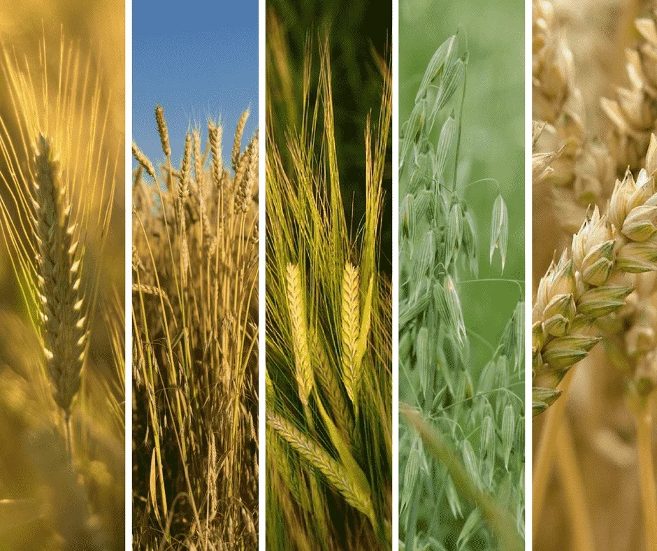
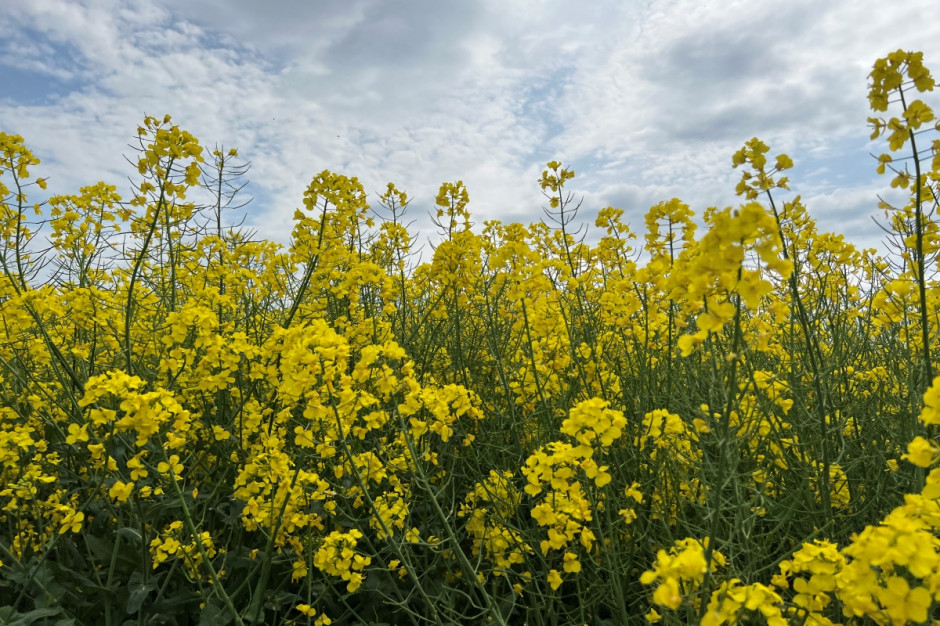
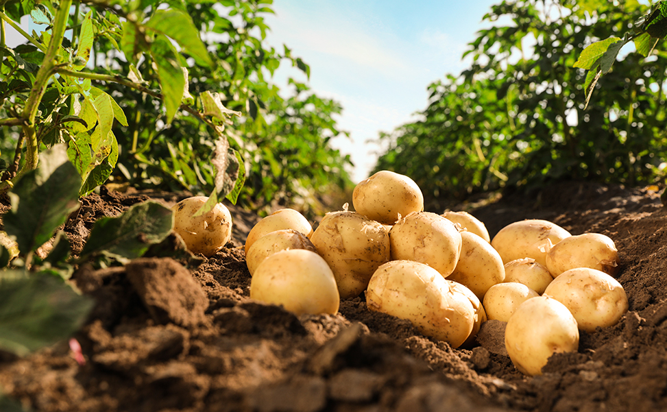
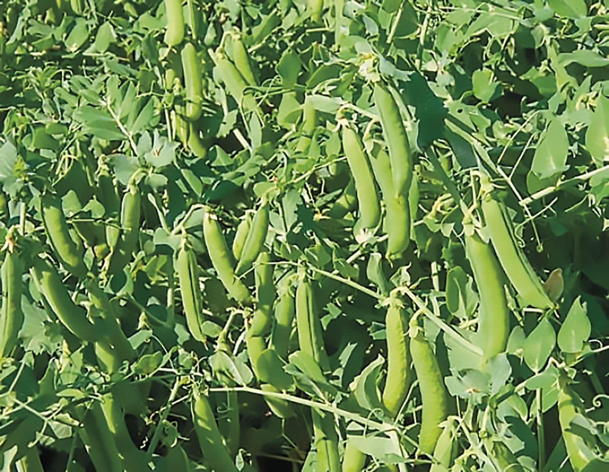
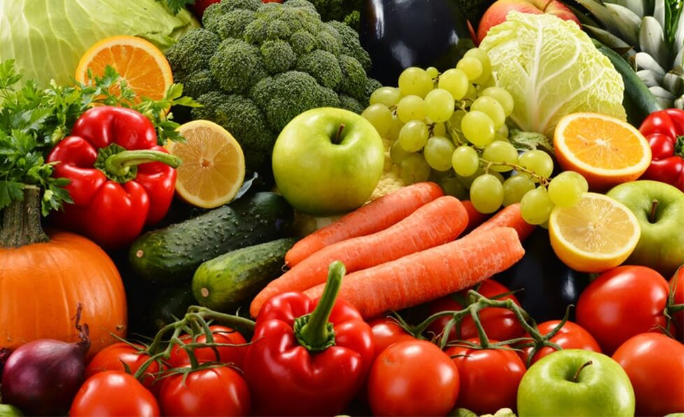
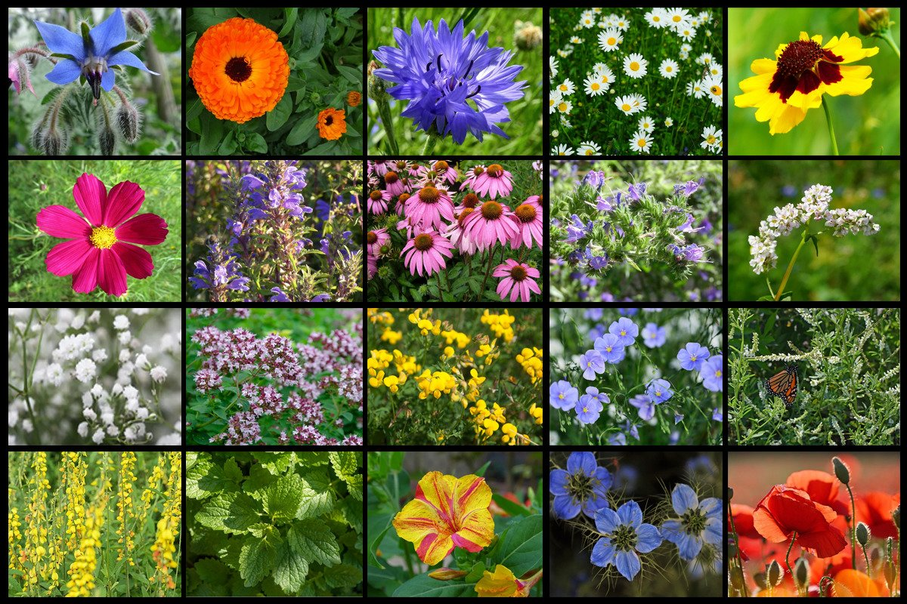
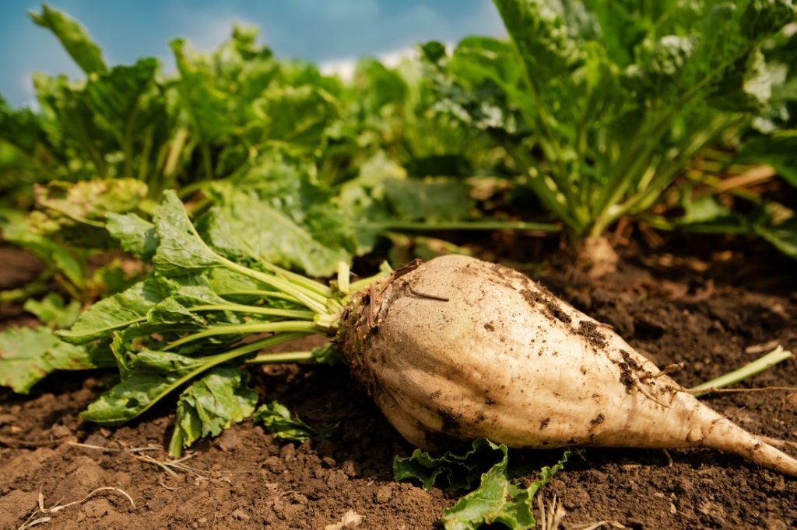

| Zbożowe | Kukurydza, pszenica, ryż, jęczmień, żyto, pszenżyto, proso, sorgo, owies. Ziarna o wysokiej zawartości skrobi, są wykorzystywane do celów konsumpcyjnych, pastewnych i przemysłowych. Najpopularniejszymi produktami przerobu zbóż są mąki, kasze. |  |
| Oleiste | Rzepak, rzepik, słonecznik, len oleisty, orzeszki ziemne, sezam i soja. Uprawiane ze względu na wysoką zawartość tłuszczu. Wykorzystywane są w gospodarstwach domowych oraz w przemyśle cukierniczym, piekarniczym, konserwowym i rybnym, a także do produkcji farb i lakierów, kosmetyków, leków, środków ochrony roślin, produkcji gum i smarowania silników |  |
| Okopowe (bulwiaste) | Ziemniaki, buraki, maniok, bataty. Rośliny okopowe gromadzą substancje zapasowe w korzeniu lub bulwie w postaci wielocukrów, dwucukrów i cukrów prostych. Rośliny te należą do różnych rodzin botanicznych. Mają duże znaczenie gospodarcze jako źródło pożywienia. |  |
| Strączkowe | Soczewica, fasola, groch, ciecierzyca. rośliny z rodziny bobowatych (motylkowatych) o dużych nasionach uprawiane jako rośliny pastewne, jadalne i dostarczające surowca do przemysłu spożywczego. Uprawiane są dla nasion, paszy i jako zielony nawóz. Ponieważ tak jak inne motylkowe współżyją z bakteriami brodawkowymi – wiążą wolny azot. |  |
| Owoce i warzywa | Jabłka, gruszki, wiśnie, czereśnie, śliwy, truskawki, cebula, kapusta, pomidor, marchew, pietruszka, seler, por, ogórek, kalafior. Częściami użytkowymi roślin warzywnych mogą być całe rośliny lub tylko: liście, owoce, kwiatostany, bulwy, łodygi i korzenie, natomiast roślin owocowych tylko owoc. |  |
| Miododajne | Rośliny zaliczane do roślin pszczelarskich lub roślin pożytkowych – rośliny o kwiatach barwnych i wonnych, kwitnące długo i obficie, które dostarczają pszczołom surowca do produkcji miodu – nektaru (rośliny nektarodajne) lub rośliny, na których liściach i pędach wytwarzany jest inny surowiec do produkcji miodu. |  |
| Cukrodajne | Burak cukrowy, trzcina cukrowa. Rośliny typowo przemysłowe, z których wytwarza się głównie cukier. |  |